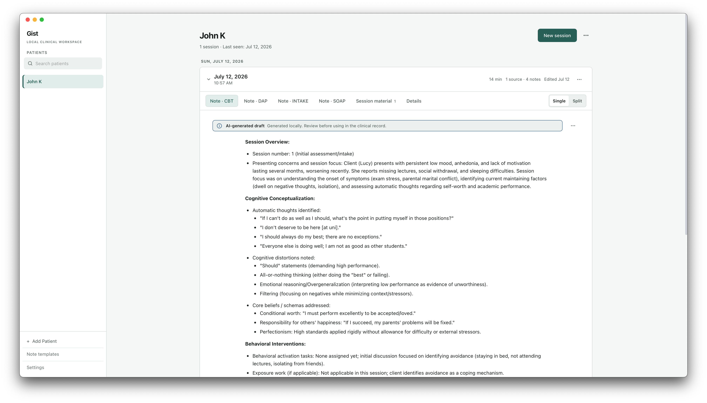

Keep it local
Audio, transcripts, notes, and client data are designed to stay on your device in the normal bundled workflow.
Gist helps therapists turn session recordings into structured, editable notes — with your clinical data staying on your Mac.
macOS 14+ · Apple Silicon · Free and open source
1 session · Last seen: Jul 12, 2026
• Presenting concerns and session focus: client presents with persistent low mood and lack of motivation.
• Cognitive conceptualization and behavioral interventions documented from the source material.
• Progress and plan: review patterns, identify next steps, and continue collaborative care.
Gist is documentation assistance for therapists, counselors, psychologists, psychiatrists, and social workers who want a focused tool that respects the privacy of their practice.
Audio, transcripts, notes, and client data are designed to stay on your device in the normal bundled workflow.
Record, import an audio file, paste a transcript, or write a clinician note from scratch.
Generate SOAP, DAP, BIRP, CBT, intake, and other structured formats, then edit the draft beside its source.
Gist keeps the sequence familiar: capture what happened, shape it into the note format you use, then review it with care.
Keep your session history in one local workspace.
Use an existing recording, transcript, or your own observations.
Generate a structured draft and check it against the source material.

Start with a familiar clinical format, create your own template, and keep the final say with the clinician. Gist is built to assist documentation — not to diagnose or make decisions.
See supported formats
Gist is built by a machine-learning engineer with a psychology background who wanted to make it easier for people to spend more time helping other people.
The idea is simple: useful documentation assistance should be private, accessible, and honest about its limits. Gist is early software, and it is being shaped by the people who might actually use it.
Share feedbackDownload the latest unsigned build for Apple Silicon Mac. The first model download needs an internet connection; after that, local processing can continue offline.
Gist is documentation assistance, not a diagnostic or clinical decision-making system. Review every generated note against the source material before using it in a clinical record.